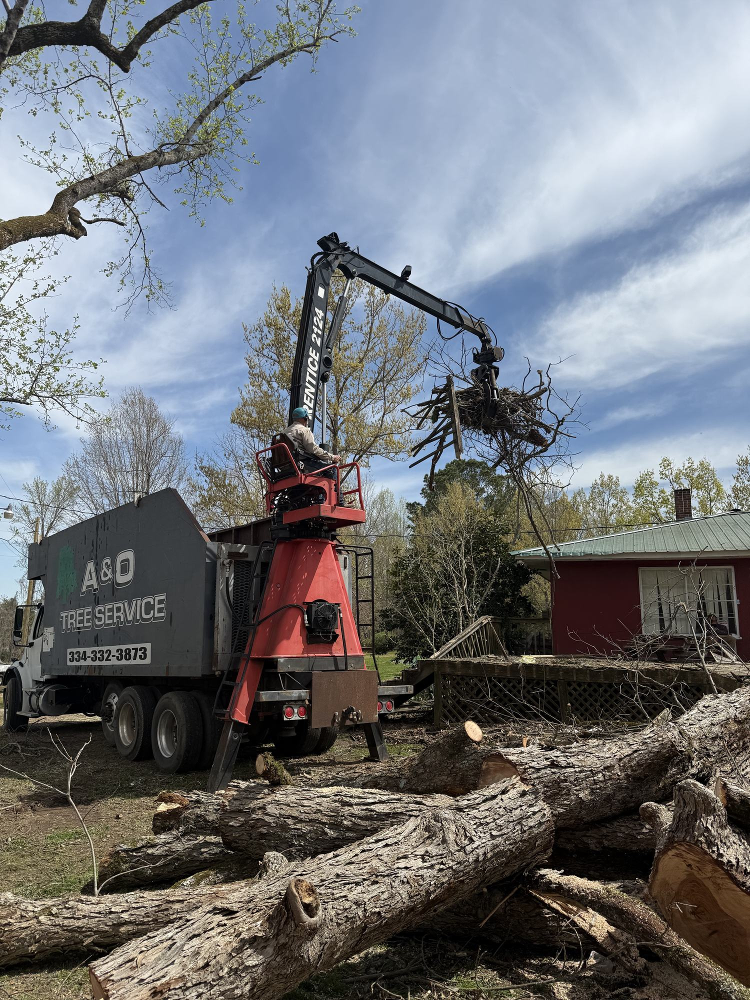

When storms, high winds, or fallen trees create an urgent problem, A&O Tree Service can help with emergency tree service, fallen tree removal, dangerous limbs, and storm cleanup.
A fallen tree, cracked limb, or storm-damaged tree can block access, threaten your home, damage fences, or create safety concerns around your property.
A&O Tree Service responds to urgent tree service needs across East Central Alabama, including fallen trees, dangerous limbs, storm debris, and hazardous trees after severe weather.
If a tree is on a structure, near a power line, blocking a driveway, or leaning after a storm, call for help and avoid trying to handle the situation yourself.
Request Emergency Help
A&O Tree Service helps property owners respond quickly when tree damage creates an immediate problem.
Removal of trees that have fallen across yards, driveways, fences, structures, or access points.
Cleanup and removal after high winds, heavy rain, severe weather, and broken tree sections.
Removal of broken, hanging, or cracked limbs that could fall and cause damage.
Clearing tree debris that prevents access to your home, property, or driveway.
Careful removal when damaged trees threaten homes, buildings, sheds, or fences.
Brush, limb, and debris cleanup after the urgent tree work is complete.
During urgent tree situations, the goal is simple: assess the hazard, make a plan, remove the risk, and clean up the property.
Call A&O or submit the form with your location and details about the tree emergency.
The tree, structure, access, and safety risks are reviewed before work begins.
The crew removes the fallen tree, dangerous limb, or damaged tree sections.
Debris, limbs, and brush are cleaned up according to the job plan.
Emergency tree work can be dangerous. Broken limbs, unstable trunks, root damage, and storm stress can make a tree unpredictable.
A&O Tree Service brings experience, equipment, and planning to urgent jobs so the work can be handled carefully.

A look at fallen tree removal, storm cleanup, and equipment used to handle urgent tree service needs.


A&O Tree Service is based in Notasulga and provides emergency tree service across East Central Alabama.
Call A&O Tree Service or request help online. Emergency tree service is available for fallen trees, storm cleanup, dangerous limbs, and urgent property hazards.
Call 334-332-3873 Request Help